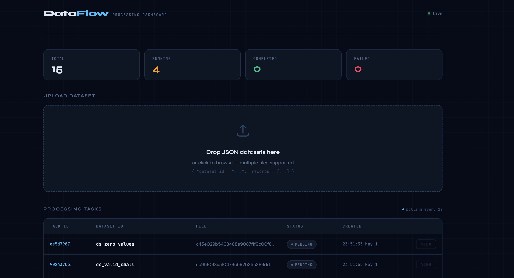
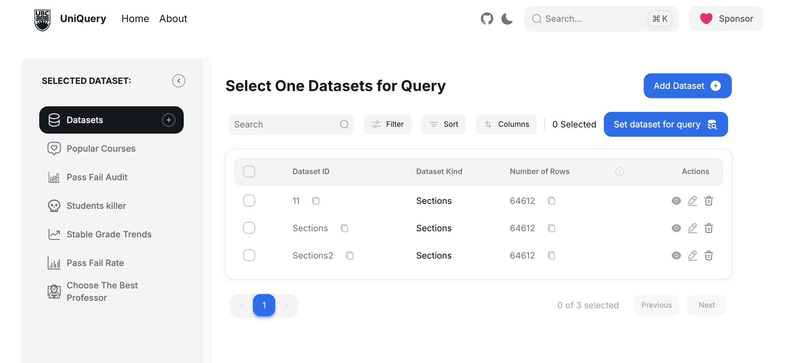
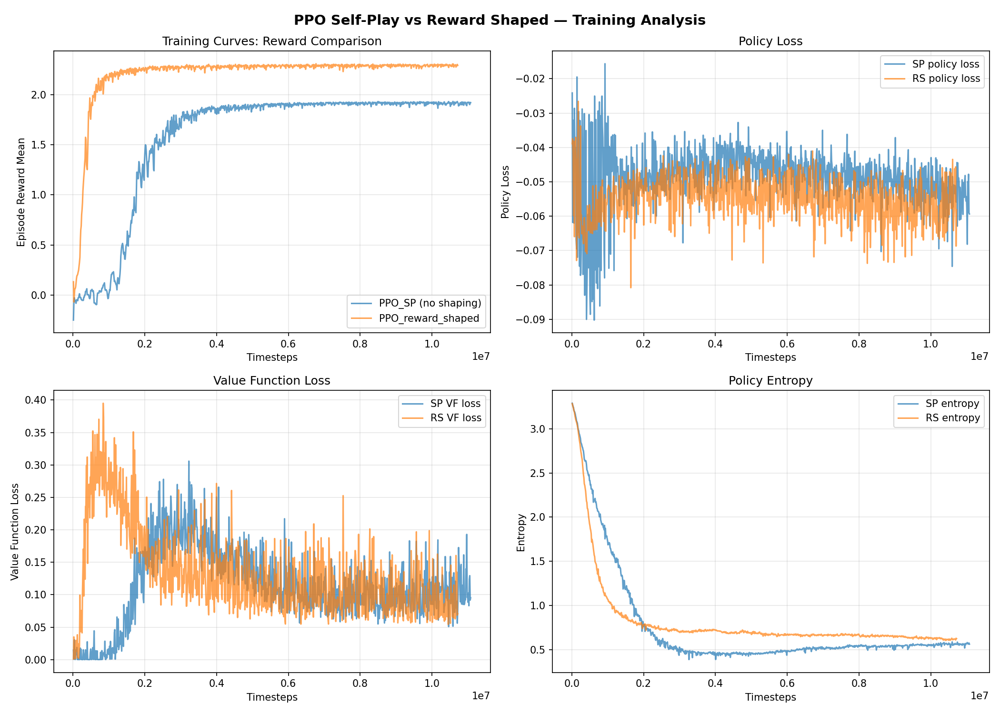
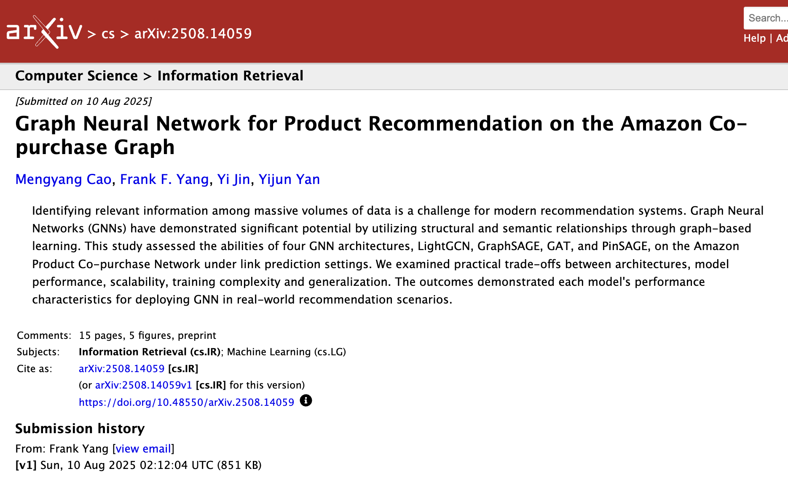

Georgia Institute of Technology
MSc in Computer Science
MSc CS @ Georgia Tech
I am a computer science graduate student who enjoys building reliable software systems and turning research ideas into working prototypes. My work spans full-stack engineering, applied machine learning, LLM systems, and AI agents.
I am especially interested in ML, LLMs, DRL, World models, and Embodied AI. Outside of research and engineering, I love snowboarding and teaching as a CASI snowboard instructor.
Education
MSc in Computer Science
BSc in Computer Science
Research
Projects

AI onboarding assistant
An AI-powered onboarding chatbot that lets new hires query 10K+ internal documents with cited answers under 5 seconds, backed by a RAG pipeline and retrieval evaluation.

Fault-tolerant processing system
An async JSON data-processing platform designed around a FastAPI API, Redis-backed Celery workers, PostgreSQL task state, and containerized worker scaling for concurrent, failure-aware processing.

Full-stack web application
A web application that lets users query UBC course data efficiently. The project focuses on practical data ingestion, filtering, and a clean query experience for academic information.
Research

Multi-agent reinforcement learning
A PPO self-play curriculum for 2v2 Soccer-Twos, using reward shaping, separated policy/value networks, and mixed opponents to reduce catastrophic forgetting and win a 72-team tournament.

Research project / preprint
A graph learning study on Amazon co-purchase recommendation, comparing LightGCN, GraphSAGE, GAT, and PinSAGE under link prediction settings with practical trade-off analysis.
Contact